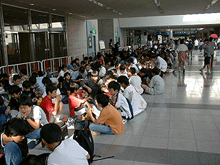
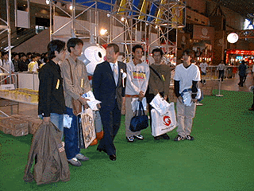
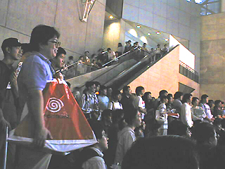
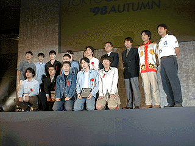
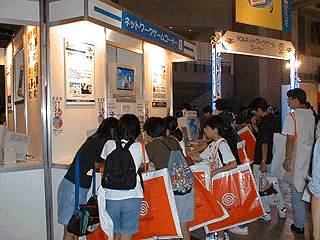
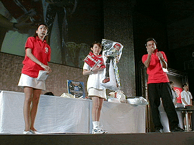

10月9日（金）幕張メッセにて開幕した「東京ゲームショウ '98秋」は、いよいよ10日（土）から一般公開。
初日に続いてこの日も好天に恵まれ、開場前から熱心なゲームファンが殺到。開場前に列を作った人々は3万8000人にものぼりました。
そのため、イベント事務局では開場を30分繰り上げ、9時30分からとしました。

キッズコーナーの開場を待つ家族づれ
開場の直前、行列先頭の熱心な来場者に、CESA上月景正会長から記念品の贈呈が行われました。

一番乗りのファンに話かけるCESA上月会長（中央）
お目当てのブースを訪れた来場者たちは、新作ゲームのフリープレイや大画面のムービー鑑賞など、思い思いの楽しみに目を輝かせていました。
また多くのブースでは、展示に加えてタレントや声優によるイベントを開催。こちらにも多数のファンがつめかけ、大変な賑わいを見せていました。

ブースイベントに熱い視線
10時からのイベントステージでは、優れたアマチュア作品を表彰する「TOKYOゲーム賞〜がんばれ！未来のクリエイター」が開かれました。
全46作品の応募から、受賞作にノミネートされたのは9タイトル。その中で審査員全員の支持を得て最優秀賞に輝いたのは、アイマックスアカデミーの豊田英一郎さんらによる「CRYSTAL
DUST」。他に、優秀賞および審査員特別賞それぞれ2グループが表彰を受けました（詳しくはこちらのページをご覧ください）。

受賞者と審査員の皆さん。中央の3人が、最優秀賞・アイマックスアカデミーの方々
前回好評の「PCゲームコーナー」が、さらに未来的にバージョンアップ。NTTの特別協力による新設の「ネットワークゲームコーナー」では、インターネットを介して話題のネットワークゲームをプレイ。子供たちから大人まで、幅広い層の来場者を集めていました。
コーナーの一角には、会場から全世界に発信中の情報を見ることができる「東京ゲームショウネットワーク体験ゾーン」も。足をとめて、パソコンを操作する来場者の姿が見られました。

ネットゲームに夢中のサイバーキッズ
イベントステージでは16時から、一般公開日の恒例、各出展者の提供による「CESAチャリティーオークション＆大抽選会」を開催。オークションの売上げはユニセフなどに寄付されます。
この「CESAチャリティーオークション＆大抽選会」は、11日（日）にも行われます。

ファン垂涎のプレミアムグッズに、オークションは白熱
この日の入場者数は7万9282人を数え、イベント開始以来、最大を記録しました。こうして大盛況のうちに終えた「東京ゲームショウ '98秋」一般公開日初日。たくさんの配布物を手にした来場者が、みな笑顔で会場を後にする様子が印象的でした。
11日（日）は開催最終日、いっそうの盛り上がりが見込まれます。
皆様、ぜひ東京ゲームショウにお越しください。